Films
226 documentaries and shorts screened at Double Exposure, 2015–2026. Filter by year or topic, browse by country, or see the poster wall.
Year:
Topic:
Length:
2026 the 2026 edition →
 A Month in MinnesotaAnnie Sundberg2026 · 40 min
A Month in MinnesotaAnnie Sundberg2026 · 40 min- An Unknown SubstanceSteven Leckart · Maia Wikler2026 · 39 min
- Artificial LoveArjun Fischer2026 · 23 min
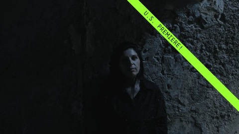
Casa MiaAlexandra Genova2026 · 16 min- Crime & ParodyWill Thwaites2026 · 88 min
 Free Joan LittleYoruba Richen2026 · 36 min
Free Joan LittleYoruba Richen2026 · 36 min Kikuyu LandAndrew H. Brown, Bea Wangondu2026 · 93 min
Kikuyu LandAndrew H. Brown, Bea Wangondu2026 · 93 min Killing AnnaSam Benstead2026 · 76 min
Killing AnnaSam Benstead2026 · 76 min My Brother's KillerMy Brother’s Killer2026 · 95 min
My Brother's KillerMy Brother’s Killer2026 · 95 min My NDAJuliane Dressner, Miriam Shor2026 · 101 min
My NDAJuliane Dressner, Miriam Shor2026 · 101 min My Underground MotherMarisa Fox2026 · 86 min
My Underground MotherMarisa Fox2026 · 86 min Rehearsals for a RevolutionPegah Ahangarani2026 · 95 min
Rehearsals for a RevolutionPegah Ahangarani2026 · 95 min RescueSine Plambech2026 · 90 min
RescueSine Plambech2026 · 90 min Rhapsody on the Outlaw OceanIan Urbina2026 · 61 min
Rhapsody on the Outlaw OceanIan Urbina2026 · 61 min- Short Strand: Against the GrainSteven Leckart · Maia Wikler2026
- Short Strand: Close to HomeMarie-Josée Desharnais · Alexandra Catherine Genova · Arjun Fischer2026
- Short Strand: Minneapolis: On the Record + A Special ScreeningLaura Poitras, Rachel Lauren Mueller · Anne Sundberg · Yoruba Richen, Christalyn Hampton2026
- SurrenderedMJ Desharnais2026 · 3 min
 The Drug in Our PocketAnnie Sundberg2026 · 77 min
The Drug in Our PocketAnnie Sundberg2026 · 77 min The Oligarch and the Art DealerAndreas Dalsgaard2026 · 120 min
The Oligarch and the Art DealerAndreas Dalsgaard2026 · 120 min The Secret Reading Club of KabulShakiba Adil, Elina Hirvonen2026 · 95 min
The Secret Reading Club of KabulShakiba Adil, Elina Hirvonen2026 · 95 min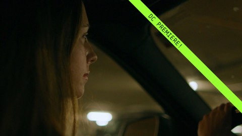
The Sludge WarGalassia Grassetto2026 · 80 min- They're HereThey’re Here2026 · 25 min
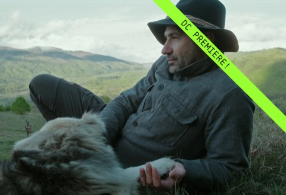
Wild EastMaia Wikler2026 · 39 min
2025 the 2025 edition →
 All the Empty RoomsJoshua Seftel2025 · 33 min
All the Empty RoomsJoshua Seftel2025 · 33 min Ask E. JeanIvy Meeropol2025 · 91 min
Ask E. JeanIvy Meeropol2025 · 91 min Bloodlines, MississippiCrystal Kayiza2025 · 20 min
Bloodlines, MississippiCrystal Kayiza2025 · 20 min Boil That Cabbage DownCandace Williamson2025 · 25 min
Boil That Cabbage DownCandace Williamson2025 · 25 min BombshellBen Loeterman2025 · 82 min
BombshellBen Loeterman2025 · 82 min Canceled: The Paula Deen StoryBilly Corben2025 · 103 min
Canceled: The Paula Deen StoryBilly Corben2025 · 103 min Cover-UpLaura Poitras, Mark Obenhaus2025 · 117 min
Cover-UpLaura Poitras, Mark Obenhaus2025 · 117 min CycleLaura Dyan Kezman, William Howell2025 · 95 min
CycleLaura Dyan Kezman, William Howell2025 · 95 min ExodusNimco Sheikhaden2025 · 35 min
ExodusNimco Sheikhaden2025 · 35 min In Exchange for FleshCorey Devon Arthur, Sandro Ramani2025 · 15 min
In Exchange for FleshCorey Devon Arthur, Sandro Ramani2025 · 15 min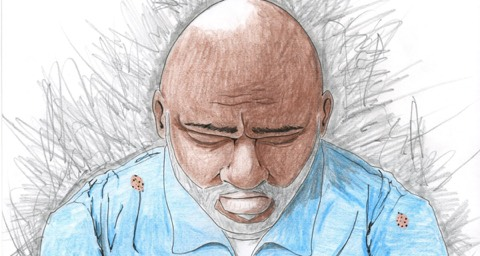
Jeffery, Come HomeEsther Lim, Jankhna Sura2025 · 21 min KhartoumIbrahim Snoopy Ahmad, Timeea Mohamed Ahmed, Rawia Alhag2025 · 82 min
KhartoumIbrahim Snoopy Ahmad, Timeea Mohamed Ahmed, Rawia Alhag2025 · 82 min Listen to MeStephanie Etienne, Kanika Harris2025 · 77 min
Listen to MeStephanie Etienne, Kanika Harris2025 · 77 min Magic & MonstersNorah Shapiro2025 · 89 min
Magic & MonstersNorah Shapiro2025 · 89 min No se ve desde acá (You Can't See It From Here)Enrique Pedráza-Botero2025 · 20 min
No se ve desde acá (You Can't See It From Here)Enrique Pedráza-Botero2025 · 20 min PoisonedJoy Ash2025 · 90 min
PoisonedJoy Ash2025 · 90 min Rovina's ChoiceThomas Jennings, Annie Wong2025 · 22 min
Rovina's ChoiceThomas Jennings, Annie Wong2025 · 22 min Status: VenezuelanMauricio Rodriguez-Pons2025 · 35 min
Status: VenezuelanMauricio Rodriguez-Pons2025 · 35 min TataLina Vdovîi, Radu Ciorniciuc2025 · 82 min
TataLina Vdovîi, Radu Ciorniciuc2025 · 82 min- Teaching AmericaAnurima Bhargava2025 · 20 min
 Thank You for Allowing Me to Speak with You TodayKate Stonehill2025 · 8 min
Thank You for Allowing Me to Speak with You TodayKate Stonehill2025 · 8 min The Black SwanMads Brügger2025 · 90 min
The Black SwanMads Brügger2025 · 90 min The Six Billion Dollar ManEugene Jarecki2025 · 126 min
The Six Billion Dollar ManEugene Jarecki2025 · 126 min Trade SecretAbraham Joffe2025 · 98 min
Trade SecretAbraham Joffe2025 · 98 min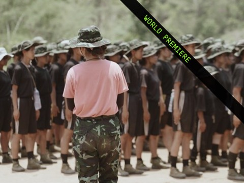
We Bloom in Spring2025 · 19 min
2024 the 2024 edition →
 A Shot at HistoryErika Cohn2024 · 24 min
A Shot at HistoryErika Cohn2024 · 24 min- Acts of ReparationSelina Lewis Davidson, Macky Alston2024 · 113 min
 American Coup: Wilmington 1898Brad Lichtenstein, Yoruba Richen2024 · 111 min
American Coup: Wilmington 1898Brad Lichtenstein, Yoruba Richen2024 · 111 min- American Grail: A Quest for the Ivory-Billed WoodpeckerAndy Sarjahani2024 · 16 min
 Dust to DustKôsai Sekine2024 · 89 min
Dust to DustKôsai Sekine2024 · 89 min- Ernest Cole: Lost and FoundRaoul Peck2024 · 105 min
- Everything Is FineVanessa Kjeldsen2024 · 28 min
 Expression of IllnessBryn Silverman2024 · 21 min
Expression of IllnessBryn Silverman2024 · 21 min Fox Chase BoyGerad Argeros, Kaya Moon Dillon2024 · 27 min
Fox Chase BoyGerad Argeros, Kaya Moon Dillon2024 · 27 min HomegrownMichael Premo2024 · 109 min
HomegrownMichael Premo2024 · 109 min How to Sue the KlanJohn Beder2024 · 35 min
How to Sue the KlanJohn Beder2024 · 35 min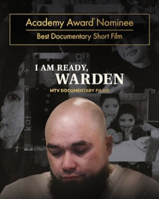
I Am Ready, WardenSmriti Mundhra2024 · 37 min I Hope This Helps!Daniel Freed2024 · 51 min
I Hope This Helps!Daniel Freed2024 · 51 min Men of WarJen Gatien, Billy Corben2024 · 98 min
Men of WarJen Gatien, Billy Corben2024 · 98 min Mistress DispellerElizabeth Lo2024 · 94 min
Mistress DispellerElizabeth Lo2024 · 94 min- Police DiveTeresa Carante2024 · 10 min
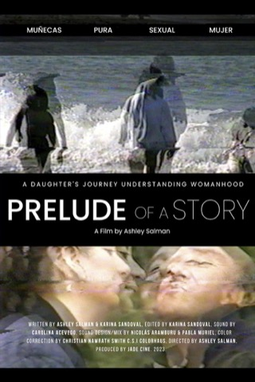
Prelude of a StoryAshley Salman2024 · 17 min- Projecting ProtestThomas Clement2024 · 22 min
 Relentless MemoryPaula Rodriguez Sickert2024 · 93 min
Relentless MemoryPaula Rodriguez Sickert2024 · 93 min Safe PlaceSamuel-Ali Mirpoorian2024 · 20 min
Safe PlaceSamuel-Ali Mirpoorian2024 · 20 min Searching for AmaniNicole Gormley, Debra Aroko2024 · 80 min
Searching for AmaniNicole Gormley, Debra Aroko2024 · 80 min The Accidental SpyAnthony Wonke2024 · 98 min
The Accidental SpyAnthony Wonke2024 · 98 min The StrikeJoeBill Muñoz, Lucas Guilkey2024 · 86 min
The StrikeJoeBill Muñoz, Lucas Guilkey2024 · 86 min
2023 the 2023 edition →
 1946: The Mistranslation That Shifted CultureSharon “Rocky” Roggio2023 · 92 min
1946: The Mistranslation That Shifted CultureSharon “Rocky” Roggio2023 · 92 min- 23Milan M.A. Gonzales2023 · 10 min
 All Static & NoiseDavid Novack2023 · 102 min
All Static & NoiseDavid Novack2023 · 102 min- Another BodySophie Compton, Reuben Hamlyn2023 · 92 min
- Beneath the Surfacecai thomas2023 · 6 min
- Friendly SignsRahsaan “New York” Thomas2023 · 21 min
 HazingByron Hurt2022, 2023 · 103 min
HazingByron Hurt2022, 2023 · 103 min If Dreams Were LightningRamin Bahrani2023 · 25 min
If Dreams Were LightningRamin Bahrani2023 · 25 min IncidentBill Morrison2023 · 30 min
IncidentBill Morrison2023 · 30 min Locked OutKate Davis, Luchina Fisher2023 · 78 min
Locked OutKate Davis, Luchina Fisher2023 · 78 min MintedNicholas Bruckman2023 · 96 min
MintedNicholas Bruckman2023 · 96 min One BulletCarol Dysinger2023 · 90 min
One BulletCarol Dysinger2023 · 90 min Phantom ParrotKate Stonehill2023 · 82 min
Phantom ParrotKate Stonehill2023 · 82 min Sorry / Not SorryCaroline Suh, Cara Mones2023 · 90 min
Sorry / Not SorryCaroline Suh, Cara Mones2023 · 90 min Stripped for Parts: American Journalism on the BrinkRick Goldsmith2023 · 95 min
Stripped for Parts: American Journalism on the BrinkRick Goldsmith2023 · 95 min Suddenly TVRoopa Gogineni2023 · 19 min
Suddenly TVRoopa Gogineni2023 · 19 min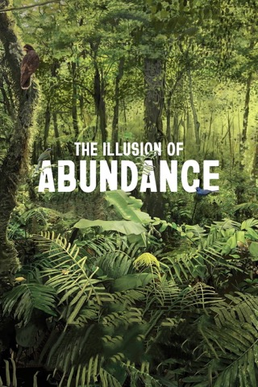
The Illusion of AbundanceMatthieu Lietaert, Erika Gonzalez Ramirez2023 · 60 min The Lost Souls of SyriaStéphane Malterre2023 · 99 min
The Lost Souls of SyriaStéphane Malterre2023 · 99 min- The Mother TrapMark Helenowski2023 · 17 min
 The Night DoctrineMauricio Rodriguez-Pons, Almudena Toral2023 · 16 min
The Night DoctrineMauricio Rodriguez-Pons, Almudena Toral2023 · 16 min The Price of Truth, Director’s CutPatrick Forbes2023 · 85 min
The Price of Truth, Director’s CutPatrick Forbes2023 · 85 min The Slow HustleSonja Sohn2021, 2023 · 90 min
The Slow HustleSonja Sohn2021, 2023 · 90 min The Smallest PowerAndy Sarjahani2023 · 6 min
The Smallest PowerAndy Sarjahani2023 · 6 min This Is Not Financial AdviceZach Ingrasci, Chris Temple2023 · 88 min
This Is Not Financial AdviceZach Ingrasci, Chris Temple2023 · 88 min- Who Is Living in My Father’s House?Isaac George Crown Manesis2023 · 10 min
2022 the 2022 edition →
 8 Days at WareRachel Lauren Mueller · Anne Sundberg · Yoruba Richen, Meg Shutzer2022 · 27 min
8 Days at WareRachel Lauren Mueller · Anne Sundberg · Yoruba Richen, Meg Shutzer2022 · 27 min American PainDarren Foster2022 · 106 min
American PainDarren Foster2022 · 106 min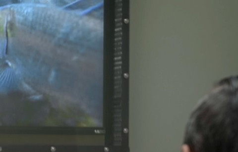
Blue RoomMerete Mueller2022 · 12 min Body PartsKristy Guevara-Flanagan2022 · 90 min
Body PartsKristy Guevara-Flanagan2022 · 90 min Into the Weeds: Dewayne “Lee” Johnson vs. Monsanto CompanyJennifer Baichwal2022 · 96 min
Into the Weeds: Dewayne “Lee” Johnson vs. Monsanto CompanyJennifer Baichwal2022 · 96 min Mariupolis 2Mantas Kvedaravičius2022 · 112 min
Mariupolis 2Mantas Kvedaravičius2022 · 112 min Myanmar DiariesThe Myanmar Film Collective2022 · 70 min
Myanmar DiariesThe Myanmar Film Collective2022 · 70 min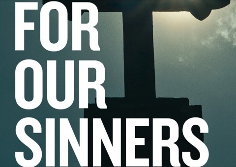
Pray for Our SinnersSinéad O’Shea2022 · 81 min RetrogradeMatthew Heineman2022 · 95 min
RetrogradeMatthew Heineman2022 · 95 min Sealed in BloodSofian Khan2022 · 10 min
Sealed in BloodSofian Khan2022 · 10 min Secret Screening2022 · 94 min
Secret Screening2022 · 94 min Strands of ResistanceBrent Huffman2022 · 22 min
Strands of ResistanceBrent Huffman2022 · 22 min- The Family StatementGrace Harper, Kate Stonehill2022 · 15 min
 The GrabGabriela Cowperthwaite2022 · 104 min
The GrabGabriela Cowperthwaite2022 · 104 min The Killing of a JournalistMatt Sarnecki2022 · 100 min
The Killing of a JournalistMatt Sarnecki2022 · 100 min The New Greatness CaseAnna Shishova-Bogolyubova2022 · 96 min
The New Greatness CaseAnna Shishova-Bogolyubova2022 · 96 min The Other Little Black BookBarbara Corbellini Duarte, Mark Adam Miller2022 · 15 min
The Other Little Black BookBarbara Corbellini Duarte, Mark Adam Miller2022 · 15 min
2021 the 2021 edition →
 3212 Un-RedactedBrian Epstein, James Gordon Meek, Andrew Fredericks2021 · 100 min
3212 Un-RedactedBrian Epstein, James Gordon Meek, Andrew Fredericks2021 · 100 min AcceptedCLOSING NIGHT: Accepted2021 · 93 min
AcceptedCLOSING NIGHT: Accepted2021 · 93 min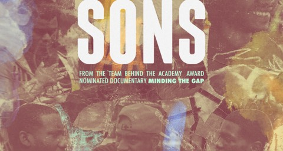
All These SonsBing Liu, Joshua Altman2021 · 88 min ATTICAStanley Nelson, Traci A. Curry2021 · 111 min
ATTICAStanley Nelson, Traci A. Curry2021 · 111 min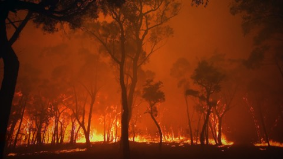
BurningEva Orner2021 · 86 min- Courtroom 3HAntonio Méndez Esparza2021 · 114 min
 Day of RageMalachy Browne, David Botti2021 · 40 min
Day of RageMalachy Browne, David Botti2021 · 40 min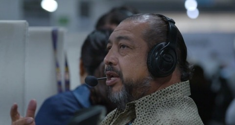
Dial HomeCésar Martínez Barba2021 · 20 min Do Not CirculateTiffany Sia2021 · 17 min
Do Not CirculateTiffany Sia2021 · 17 min ElenaMichèle Stephenson2021 · 30 min
ElenaMichèle Stephenson2021 · 30 min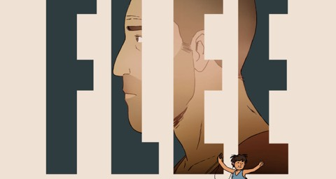
FleeSPOTLIGHT: Flee2021 · 90 min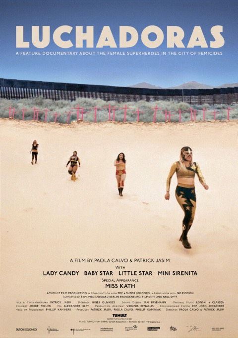
LuchadorasPaola Calvo, Patrick Jasim2021 · 92 min NonstopZac Manuel, Marta Rodriguez Maleck2021 · 12 min
NonstopZac Manuel, Marta Rodriguez Maleck2021 · 12 min- Red Taxi2021 · 14 min
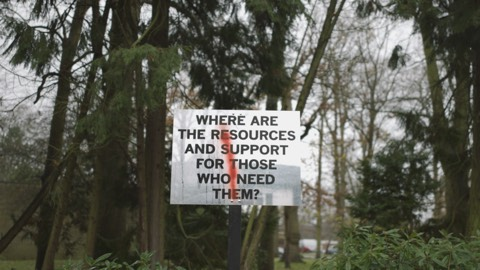
RIP SeniDaisy Ifama2021 · 13 min Since you arrived, my heart stopped belonging to meErin Semine Kökdil2021 · 21 min
Since you arrived, my heart stopped belonging to meErin Semine Kökdil2021 · 21 min Storm LakeJerry Risius, Beth Levison2021 · 85 min
Storm LakeJerry Risius, Beth Levison2021 · 85 min- The BoxShal Ngo, James Burns2021 · 16 min
 The FacilitySeth Freed Wessler2021 · 26 min
The FacilitySeth Freed Wessler2021 · 26 min The First WaveMatthew Heineman2021 · 94 min
The First WaveMatthew Heineman2021 · 94 min The Pegasus projectLaurence Topham2021 · 4 min
The Pegasus projectLaurence Topham2021 · 4 min The RescueCENTERPIECE: The Rescue2021 · 114 min
The RescueCENTERPIECE: The Rescue2021 · 114 min The RiflemanSierra Pettengill2021 · 18 min
The RiflemanSierra Pettengill2021 · 18 min The Vet VanSarah Jenks, Lizzie Mulvey2021 · 30 min
The Vet VanSarah Jenks, Lizzie Mulvey2021 · 30 min They Won't Call It MurderThey Won’t Call It Murder2021 · 21 min
They Won't Call It MurderThey Won’t Call It Murder2021 · 21 min- To Be ReconciledJames Christenson2021 · 29 min
 United States vs. Reality WinnerOPENING NIGHT: United States vs. Reality Winner2021 · 94 min
United States vs. Reality WinnerOPENING NIGHT: United States vs. Reality Winner2021 · 94 min UnrelinquishedAmina Waheed2021 · 26 min
UnrelinquishedAmina Waheed2021 · 26 min What You'll RememberWhat You’ll Remember2021 · 12 min
What You'll RememberWhat You’ll Remember2021 · 12 min Writing With FireRintu Thomas, Sushmit Ghosh2021 · 93 min
Writing With FireRintu Thomas, Sushmit Ghosh2021 · 93 min Águilas/EaglesKristy Guevara-Flanagan2021 · 14 min
Águilas/EaglesKristy Guevara-Flanagan2021 · 14 min
2020 the 2020 edition →
 'Til Kingdom Come‘Til Kingdom Come2020 · 76 min
'Til Kingdom Come‘Til Kingdom Come2020 · 76 min 76 DaysHao Wu, Weixi Chen2020 · 93 min
76 DaysHao Wu, Weixi Chen2020 · 93 min A Thousand CutsRamona Diaz2020 · 98 min
A Thousand CutsRamona Diaz2020 · 98 min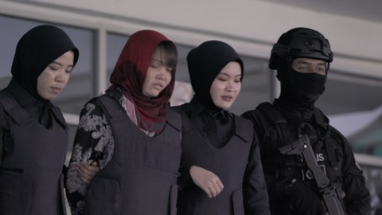
AssassinsRyan White, Jessica Hargrave2020 · 104 min Baby GodHannah Olson2020 · 76 min
Baby GodHannah Olson2020 · 76 min- Belly of the BeastErika Cohn2020 · 82 min
 CollectiveAlexander Nanau2020 · 109 min
CollectiveAlexander Nanau2020 · 109 min Enemies of the StateSonia Kennebeck2020 · 104 min
Enemies of the StateSonia Kennebeck2020 · 104 min Finding YingyingJiayan "Jenny" Shi2020 · 98 min
Finding YingyingJiayan "Jenny" Shi2020 · 98 min InfluenceRichard Poplak, Diana Neille2020 · 91 min
InfluenceRichard Poplak, Diana Neille2020 · 91 min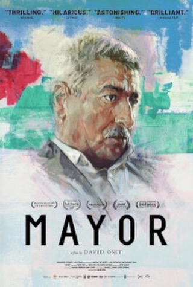
MayorDavid Osit2020 · 89 min Missing in Brooks CountyJeff Bemiss, Lisa Molomot2020 · 80 min
Missing in Brooks CountyJeff Bemiss, Lisa Molomot2020 · 80 min MLK/FBISam Pollard2020 · 104 min
MLK/FBISam Pollard2020 · 104 min- Short CutsIn Event of Moon Disaster2020 · 82 min
 The Art of Political MurderPaul Taylor2020 · 80 min
The Art of Political MurderPaul Taylor2020 · 80 min The Mole AgentMaite Alberdi2020 · 89 min
The Mole AgentMaite Alberdi2020 · 89 min The New Corporation: The Unfortunately Necessary SequelThe New Corporation2020 · 106 min
The New Corporation: The Unfortunately Necessary SequelThe New Corporation2020 · 106 min- Through the NightLoira Limbal2020 · 72 min
 Welcome to Chechnya: Inside The Russian Republic’s Deadly War On GaysWelcome to Chechnya2020 · 107 min
Welcome to Chechnya: Inside The Russian Republic’s Deadly War On GaysWelcome to Chechnya2020 · 107 min
2019 the 2019 edition →
 BedlamKenneth Rosenberg2019 · 86 min
BedlamKenneth Rosenberg2019 · 86 min Bellingcat: Truth in a Post-Truth WorldHans Pool2019 · 88 min
Bellingcat: Truth in a Post-Truth WorldHans Pool2019 · 88 min Bikram: Yogi, Guru, PredatorEva Orner2019 · 86 min
Bikram: Yogi, Guru, PredatorEva Orner2019 · 86 min Bully. Coward. Victim. The Story of Roy CohnIvy Meeropol2019 · 98 min
Bully. Coward. Victim. The Story of Roy CohnIvy Meeropol2019 · 98 min Citizen KAlex Gibney2019 · 128 min
Citizen KAlex Gibney2019 · 128 min Dark SunsJulien Elie2019 · 154 min
Dark SunsJulien Elie2019 · 154 min Desert OneBarbara Kopple2019 · 108 min
Desert OneBarbara Kopple2019 · 108 min- In Dry WaterKevin Clancy2019 · 14 min
 Lost and FoundOrlando von Einsiedel2019 · 22 min
Lost and FoundOrlando von Einsiedel2019 · 22 min Poppy CrashAndalusia Knoll Soloff2019 · 11 min
Poppy CrashAndalusia Knoll Soloff2019 · 11 min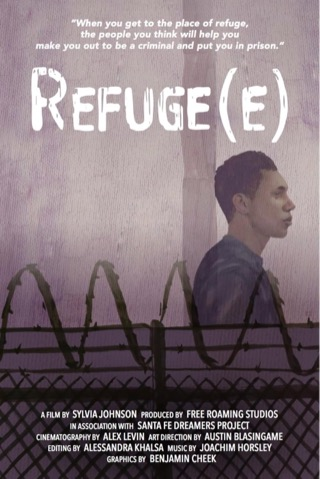
Refuge(e)Sylvia Johnson2019 · 15 min The CaveFeras Fayyad2019 · 90 min
The CaveFeras Fayyad2019 · 90 min The NightcrawlersAlexander A. Mora2019 · 39 min
The NightcrawlersAlexander A. Mora2019 · 39 min The Preppy Murder: Death in Central ParkRicki Stern, Annie Sundberg2019 · 86 min
The Preppy Murder: Death in Central ParkRicki Stern, Annie Sundberg2019 · 86 min- Waiting for TearahJuliana Schatz Preston2019 · 23 min
2018 the 2018 edition →
 A Woman CapturedBernadett Tuza-Ritter2018 · 89 min
A Woman CapturedBernadett Tuza-Ritter2018 · 89 min Angels Are Made of LightJames Longley2018 · 117 min
Angels Are Made of LightJames Longley2018 · 117 min- Divide and Conquer: The Story of Roger AilesAlexis Bloom2018 · 107 min
 False ConfessionsKatrine Philp2018 · 91 min
False ConfessionsKatrine Philp2018 · 91 min Ghost FleetShannon Service, Jeffrey Waldron2018 · 88 min
Ghost FleetShannon Service, Jeffrey Waldron2018 · 88 min- How We ChooseAlexandria Bombach2018 · 15 min
 Nellie Bly Makes the NewsPenny Lane2018 · 23 min
Nellie Bly Makes the NewsPenny Lane2018 · 23 min Of Fathers and SonsTalal Derki2018 · 99 min
Of Fathers and SonsTalal Derki2018 · 99 min- Our New PresidentMaxim Pozdorovkin2018 · 12 min
- People’s Republic of DesireHao Wu2018 · 95 min
 Roll Red RollNancy Schwartzman2018 · 80 min
Roll Red RollNancy Schwartzman2018 · 80 min Stolen Daughters: Kidnapped by Boko HaramKaren Edwards, Gemma Atwal2018 · 75 min
Stolen Daughters: Kidnapped by Boko HaramKaren Edwards, Gemma Atwal2018 · 75 min The Feeling of Being WatchedAssia Boundaoui2018 · 87 min
The Feeling of Being WatchedAssia Boundaoui2018 · 87 min The Panama PapersAlex Winter2018 · 100 min
The Panama PapersAlex Winter2018 · 100 min- The TrialJohanna Hamilton2018 · 17 min
 The Truth About Killer RobotsMaxim Pozdorovkin2018 · 82 min
The Truth About Killer RobotsMaxim Pozdorovkin2018 · 82 min The UnafraidHeather Courtney, Anayansi Prado2018 · 87 min
The UnafraidHeather Courtney, Anayansi Prado2018 · 87 min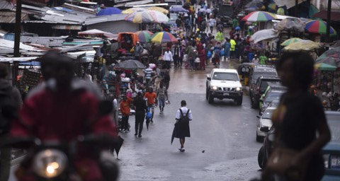
UnprotectedNadia Sussman2018 · 45 min- WatergateCharles Ferguson2018 · 130 min
- We Became FragmentsLuisa Conlon, Hanna Lane Miller, Lacy Jane Roberts2018 · 14 min
2017 the 2017 edition →
 Cocaine PrisonVioleta Ayala2017 · 78 min
Cocaine PrisonVioleta Ayala2017 · 78 min Devil's Freedom (La Libertad del Diablo)Everardo González2017 · 74 min
Devil's Freedom (La Libertad del Diablo)Everardo González2017 · 74 min Did You Wonder Who Fired the Gun?Travis Wilkerson2017 · 70 min
Did You Wonder Who Fired the Gun?Travis Wilkerson2017 · 70 min End of TruthEric Matthies, Tricia Todd2017 · 58 min
End of TruthEric Matthies, Tricia Todd2017 · 58 min Hall of MirrorsEna Talakic, Ines Talakic2017 · 87 min
Hall of MirrorsEna Talakic, Ines Talakic2017 · 87 min No Stone UnturnedAlex Gibney2017 · 111 min
No Stone UnturnedAlex Gibney2017 · 111 min One of UsHeidi Ewing, Rachel Grady2017 · 95 min
One of UsHeidi Ewing, Rachel Grady2017 · 95 min The Other Side of EverythingMila Turajlic2017 · 100 min
The Other Side of EverythingMila Turajlic2017 · 100 min The Rape of Recy TaylorNancy Buirski2017 · 91 min
The Rape of Recy TaylorNancy Buirski2017 · 91 min- Trust WHOLilian Franck2017 · 85 min
 VoyeurMyles Kane, Josh Koury2017 · 95 min
VoyeurMyles Kane, Josh Koury2017 · 95 min
2016 the 2016 edition →
 A Leak in ParadiseDavid LeLoup2016 · 76 min
A Leak in ParadiseDavid LeLoup2016 · 76 min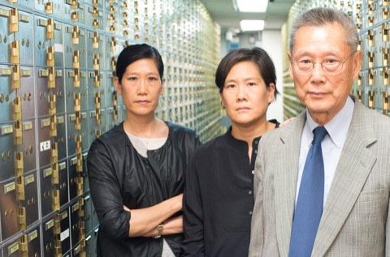
Abacus: Small Enough to JailSteve James2016 · 90 min All Governments Lie: Truth, Deception, and the Spirit of I.F. StoneFred Peabody2016 · 91 min
All Governments Lie: Truth, Deception, and the Spirit of I.F. StoneFred Peabody2016 · 91 min Betting on ZeroTed Braun2016 · 96 min
Betting on ZeroTed Braun2016 · 96 min Fire at Sea (Fuocoammare)Gianfranco Rosi2016 · 108 min
Fire at Sea (Fuocoammare)Gianfranco Rosi2016 · 108 min SolitaryKristi Jacobson2016 · 82 min
SolitaryKristi Jacobson2016 · 82 min Sour GrapesJerry Rothwell, Reuben Atlas2016 · 86 min
Sour GrapesJerry Rothwell, Reuben Atlas2016 · 86 min The Ivory GameKief Davidson, Richard Ladkani2016 · 116 min
The Ivory GameKief Davidson, Richard Ladkani2016 · 116 min
2015 the 2015 edition →
 (T)ERRORLyric Cabral, David Felix Sutcliffe2015 · 93 min
(T)ERRORLyric Cabral, David Felix Sutcliffe2015 · 93 min 1971Johanna Hamilton2015 · 80 min
1971Johanna Hamilton2015 · 80 min Cartel LandMatthew Heineman2015 · 100 min
Cartel LandMatthew Heineman2015 · 100 min Deep WebAlex Winter2015 · 86 min
Deep WebAlex Winter2015 · 86 min DroneTonje Hessen Schei2015 · 80 min
DroneTonje Hessen Schei2015 · 80 min SpotlightTom McCarthy2015 · 127 min
SpotlightTom McCarthy2015 · 127 min The Storm MakersGuillaume Suon2015 · 66 min
The Storm MakersGuillaume Suon2015 · 66 min The True CostAndrew Morgan2015 · 92 min
The True CostAndrew Morgan2015 · 92 min